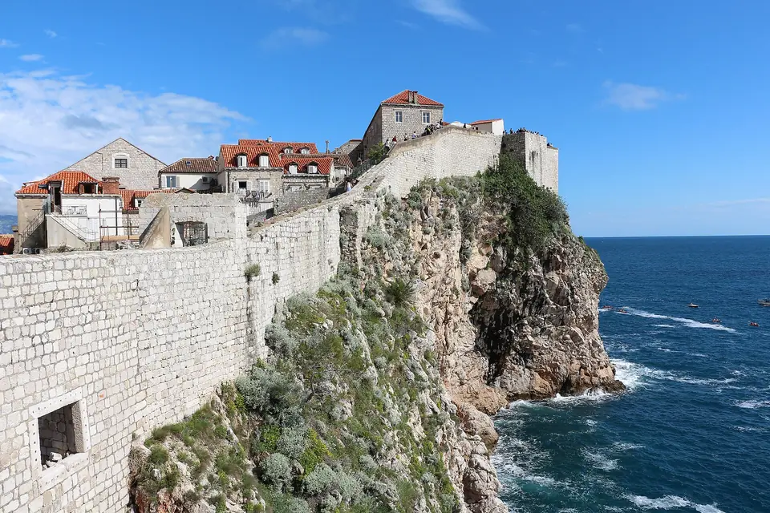
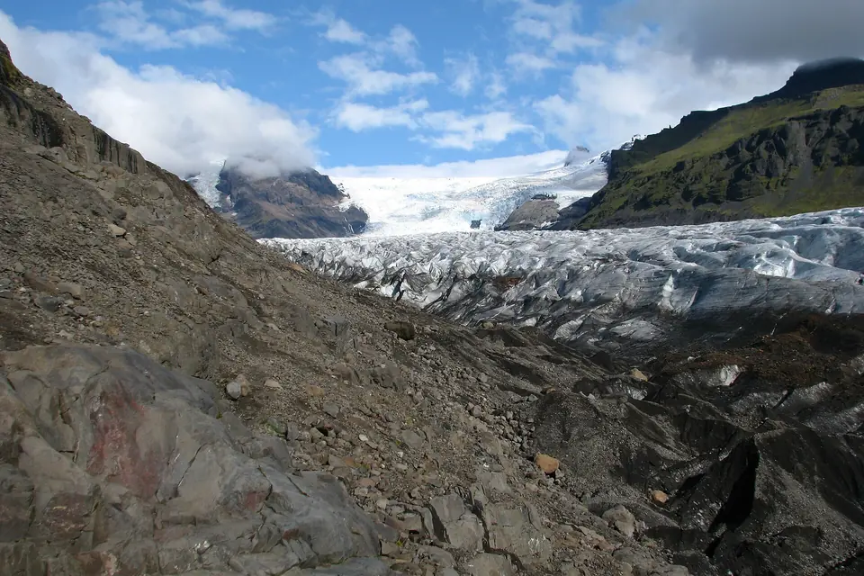

Game of Thrones
- HBO
- 2011–2019
- 8 seasons
Without a doubt, my favourite series. Based on George R. R. Martin's saga “A Song of Ice and Fire”, it mixes political intrigue, big battles and unforgettable characters.
I have watched a huge number of films and series. If I have to choose, I pick the series.

Without a doubt, my favourite series. Based on George R. R. Martin's saga “A Song of Ice and Fire”, it mixes political intrigue, big battles and unforgettable characters.

Science, emotion and an unforgettable soundtrack. A journey through space and time that leaves nobody indifferent.
Pure epic: Maximus's story is one of those you watch again and again.